Texto extraído da edição fornecida, sem atualização normativa. Consulte a página original para conferir tabelas, formulários e instruções ilustradas. A numeração dos links corresponde à página do arquivo PDF.
AVALIAÇÃO DE DESEMPENHO, PARA FINS DE PROGRESSÃO FUNCIONAL, DOS SERVIDORES DO
PLANO GERAL DE CARGOS DO PODER EXECUTIVO–PGPE E DO PLANO DE CARREIRAS DOS
CARGOS DE TECNOLOGIA MILITAR-PCCTM
DAP-06.028
Ver página original — tabelas, imagens e diagramas
Esta página contém conteúdo gráfico. Consulte a reprodução original abaixo.
Ver página original — tabelas, imagens e diagramas
É dever do servidor/empregado público, da Organização Militar (OM) e da
Região Militar (RM) ler e acompanhar a atualização da legislação que se
refere aos assuntos tratados neste Caderno de Orientação.
Lei nº 5.645, de
10 de dezembro
de 1970
Lei nº 7.163, de
7 de dezembro
de 1983
Lei nº 9.657, de
3 de junho de
1998
Lei nº 11.357,
de 19 de
outubro de
2006
Decreto nº
84.669, de 29
de abril de 1980
Decreto nº
87.257, de 7 de
junho de 1982
Decreto nº
89.310, de 19
de janeiro de
1984
Ver página original — tabelas, imagens e diagramas
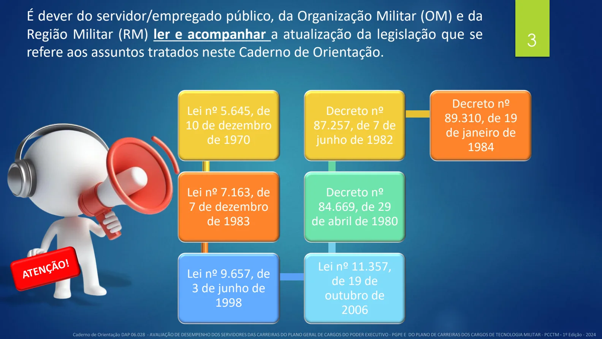
Esta página contém conteúdo gráfico. Consulte a reprodução original abaixo.
Ver página original — tabelas, imagens e diagramas
AVALIAÇÃO DE DESEMPENHO: é um processo utilizado para aferir as ações
do servidor na execução de suas atribuições, em um determinado período,
com a finalidade de identificar potencialidades, oportunidades e promover a
melhora da performance e do aproveitamento do servidor na Administração
Pública Estadual.
PROGRESSÃO FUNCIONAL: mudança do servidor da referência em que se encontra para a
imediatamente superior.
Quando a mudança ocorrer dentro da mesma classe, denominar-se-á progressão horizontal e
quando implicar mudança de classe, progressão vertical.
INTERSTÍCIO: intervalo de tempo necessário entre etapas
sucessivas da avaliação de desempenho.
O interstício para a progressão horizontal será de 12 (doze)
meses, para os avaliados com o Conceito 1, e de 18 (dezoito)
meses, para os avaliados com o Conceito 2.
PERÍODO DE AVALIAÇÃO: 1º JUL do Ano A a 30 JUN do Ano A + 1
VIGÊNCIA DA PROGRESSÃO FUNCIONAL: 1º MAR ou 1º SET, conforme conceito e
interstício.
Ver página original — tabelas, imagens e diagramas
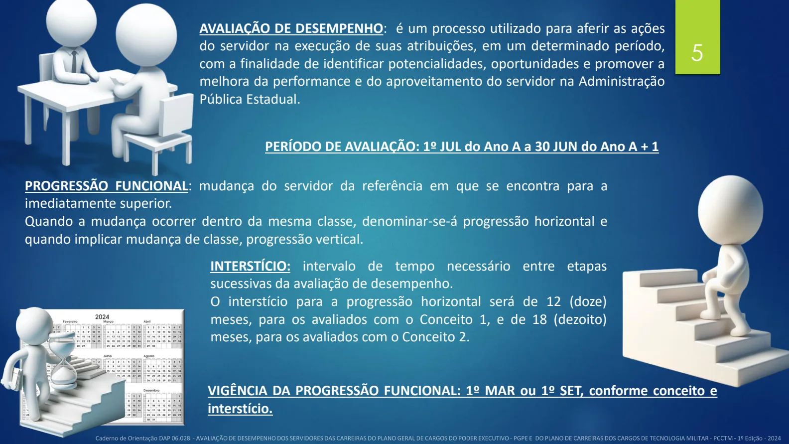
Critérios de avaliação
PDF · p. 6Esta página contém conteúdo gráfico. Consulte a reprodução original abaixo.
Ver página original — tabelas, imagens e diagramas
Critérios de avaliação
PDF · p. 7O desempenho funcional será apurado pelo chefe imediato
e ponderado de acordo com os seguintes critérios:
qualidade de trabalho
quantidade do trabalho
iniciativa
cooperação
assiduidade
urbanidade
pontualidade
disciplina
antiguidade
Ver página original — tabelas, imagens e diagramas
Critérios de avaliação
PDF · p. 8Esta página contém conteúdo gráfico. Consulte a reprodução original abaixo.
Ver página original — tabelas, imagens e diagramas
Interstício para progressão
PDF · p. 91. DO INTERSTÍCIO PARA AS PROGRESSÕES:
12 MESES
18
MESES
para os avaliados com
o Conceito 1
para os avaliados com
o Conceito 2
12
MESES
Ver página original — tabelas, imagens e diagramas
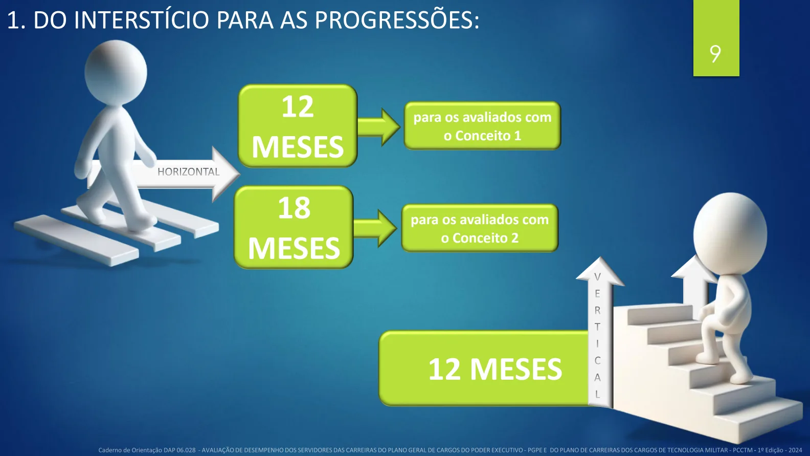
Interstício para progressão
PDF · p. 10O interstício será computado em períodos corridos.
1. DO INTERSTÍCIO PARA AS PROGRESSÕES (cont.):
Consideram-se períodos corridos aqueles contados de data a data, sem
qualquer dedução na contagem.
DA CONTAGEM DO INTERSTÍCIO:
a) nos casos de progressão funcional, o interstício será contado a partir DO PRIMEIRO DIA dos
meses de JANEIRO e JULHO.]
b) nos casos de nomeação, redistribuição, ou, ainda, de movimentação, realizadas a pedido, o
interstício será contado a partir do primeiro dia do mês de julho após a entrada em exercício.
c) no caso de movimentações realizadas ex officio, ou de redistribuição de ocupantes de cargos ou
empregos incluídos no sistema da Lei nº 5.645, de 1970, e da Lei nº 11.357, de 2006, o servidor
levará para o novo órgão o período de interstício já computado.
Ver página original — tabelas, imagens e diagramas
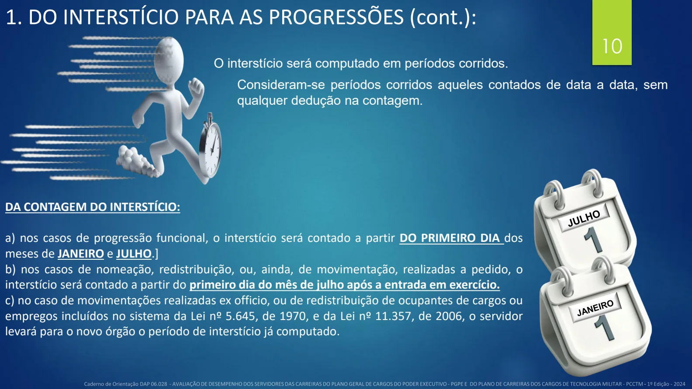
Interstício para progressão
PDF · p. 111. DO INTERSTÍCIO PARA AS PROGRESSÕES (cont.):
O interstício será INTERROMPIDO nos casos em que o servidor se afastar
do exercício do cargo ou emprego em decorrência de:
licença com
perda de vencimento
(LTIP , LMAC, etc.)
suspensão disciplinar
prisão
viagem ao exterior, sem ônus para
Administração, salvo se em gozo de férias
ou licença para tratamento de saúde
prestação de serviços a
organizações internacionais
O interstício será reiniciado a partir do primeiro dia
de janeiro OU do primeiro dia de julho
subsequente à reassunção do exercício.
Ver página original — tabelas, imagens e diagramas
Interstício para progressão
PDF · p. 121. DO INTERSTÍCIO PARA AS PROGRESSÕES (cont.):
DO RESTABELECIMENTO DO INTERSTÍCIO:
Quando já
houve
cumprimento
de suspensão
disciplinar:
Quando já
houve
cumprimento
de suspensão
preventiva:
Se for apurada a
improcedência da
penalidade aplicada
Se não resultar pena
mais grave que a de
repreensão.
A contagem do interstício será
RESTABELECIDA , com os efeitos
daí decorrentes,
A PARTIR DA DATA DO
AFASTAMENTO para o
cumprimento da suspensão.
Ver página original — tabelas, imagens e diagramas
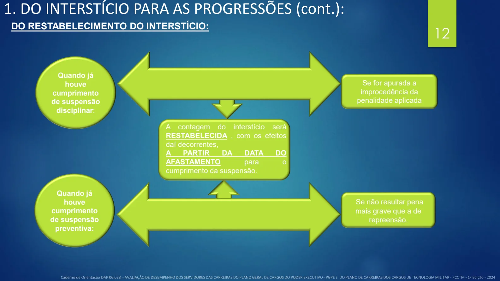
Interstício para progressão
PDF · p. 131. DO INTERSTÍCIO PARA AS PROGRESSÕES (cont.):
a) dos servidores com interstício cumprido;
b) dos servidores localizados na última referência da classe a que pertencem;
c) dos servidores que não podem obter progressão, por interrupção do interstício;
d) dos servidores concorrentes à progressão vertical;
e) dos servidores nomeados ou movimentados, a pedido, e que serão avaliados na segunda avaliação imediatamente após
a data do exercício;
f) dos servidores que, no primeiro dia do mês de julho, estiverem afastados do exercício do cargo por período igual ou
superior a 6 (seis) meses, por motivos não relacionados à interrupção do exercício; e
g) dos servidores que detentores do direito de obtenção do Conceito 1, independente de avaliação de desempenho.
No último dia de julho deverão estar consumados os seguintes levantamentos, realizados com
base nas situações existentes em primeiro de janeiro e de julho de cada ano:
Ver página original — tabelas, imagens e diagramas
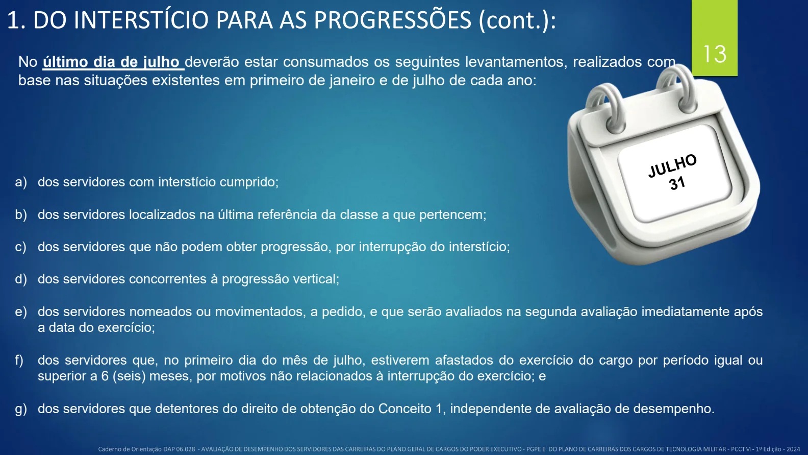
Avaliação de desempenho
PDF · p. 142. DA AVALIAÇÃO DE DESEMPENHO:
A avaliação representará o desempenho do servidor no período de 12 (doze)
meses e será feita ATÉ 15 de agosto.
O desempenho funcional será apurado pelo CHEFE IMEDIATO e ponderado de
acordo com os critérios descritos na Parte III deste caderno.
Nos casos em que ocorrer fato de que resulte subordinação imediata a outro chefe, no
âmbito do órgão ou entidade, o servidor será avaliado pelo chefe a que esteve
subordinado por maior tempo no período correspondente à avaliação, ou pelo
substituto legal.
Não sendo possível efetivar-se a avaliação nestes termos, será atribuído o mesmo
número de pontos obtido na avaliação imediatamente anterior, observada a
antiguidade (item 9 Ficha de Avaliação de Desempenho – FAD).
Ver página original — tabelas, imagens e diagramas
Avaliação de desempenho
PDF · p. 152. DA AVALIAÇÃO DE DESEMPENHO:
Os servidores nomeados serão avaliados na segunda avaliação que se verificar após
a data do exercício.
NÃO será avaliado o servidor que, no primeiro dia do mês de julho, estiver
afastado do exercício do cargo por período igual ou superior a 6 (seis) meses,
por motivos não relacionados com os casos de interrupção do interstício, listados
no item 1) da Parte IV deste caderno. Neste caso, será atribuído o CONCEITO 2.
Ao servidor afastado do exercício do cargo, para o desempenho de
MANDATO ELETIVO federal, estadual ou municipal, será atribuído o
CONCEITO 2.
Ver página original — tabelas, imagens e diagramas
Avaliação de desempenho
PDF · p. 162. DA AVALIAÇÃO DE DESEMPENHO:
Independentemente de avaliação, será atribuído o CONCEITO 1 aos
servidores:
a) ocupantes de Cargos Comissionados Executivos (CCE)
e Funções Comissionadas Executivas (FCE)
b) Posicionados no último padrão das classes inicial e
intermediárias.
Ver página original — tabelas, imagens e diagramas
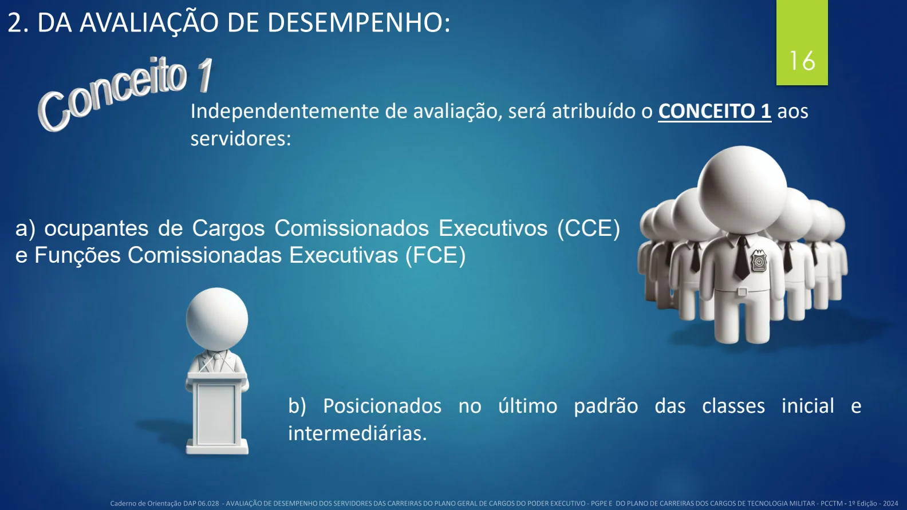
Avaliação de desempenho
PDF · p. 172. DA AVALIAÇÃO DE DESEMPENHO:
Independentemente de avaliação, será atribuído o CONCEITO 1 aos servidores (cont.):
c) em exercício de cargos ou funções comissionadas, nos Poderes
Legislativo e Judiciário da União, no Distrito Federal e Territórios,
bem como os afastados, mediante autorização expressa da
autoridade competente, para cargos ou funções de direção superior
em Empresas Públicas, Sociedades de Economia Mista, Fundações
instituídas pela União, e nos serviços dos Estados e Municípios.
d) afastados em virtude de eleição por assembleia ou designados
membros de órgãos colegiados federais.
Ver página original — tabelas, imagens e diagramas
Avaliação de desempenho
PDF · p. 182. DA AVALIAÇÃO DE DESEMPENHO (cont.):
PROGRESSÃO VERTICAL
Progressão com mudança de classe, para os servidores
posicionados no último padrão das classes inicial e intermediárias.
A PROGRESSÃO HORIZONTAL decorrerá da avaliação
de desempenho, expressa em conceitos que determinarão
o interstício a ser cumprido pelo servidor.
Ver página original — tabelas, imagens e diagramas
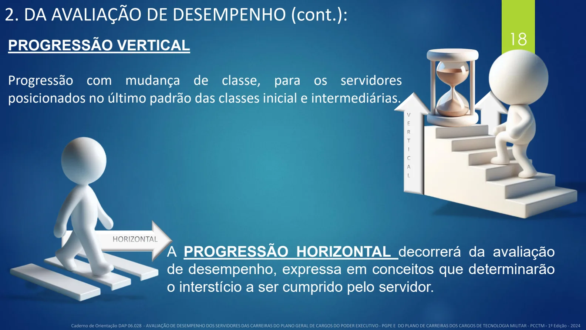
Avaliação de desempenho
PDF · p. 192. DA AVALIAÇÃO DE DESEMPENHO (cont.):
A progressão HORIZONTAL ocorrerá nos percentuais de 50% (cinquenta
por cento) por merecimento e 50% (cinquenta por cento) por
antiguidade.
A distribuição da totalidade dos servidores nos percentuais acima, será
feita pela ordem DECRESCENTE dos pontos obtidos, atribuindo-se o
conceito 1 aos primeiros 50% (cinquenta por cento) e o conceito 2
aos 50% (cinquenta por cento) restantes.
Ver página original — tabelas, imagens e diagramas
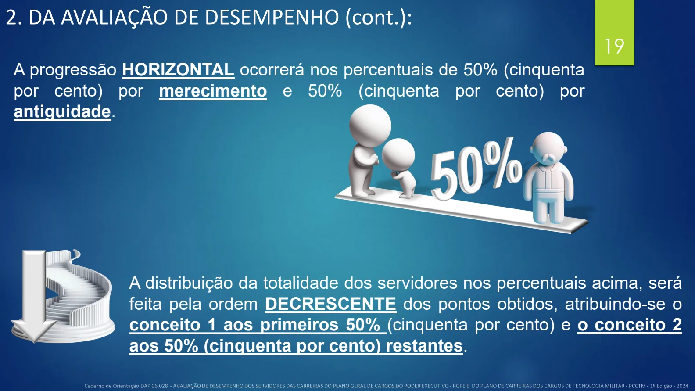
Avaliação de desempenho
PDF · p. 202. DA AVALIAÇÃO DE DESEMPENHO (cont.):
Os percentuais de 50% (cinquenta por cento) incidirão sobre o número de
avaliados de cada categoria funcional/cargo.
Na hipótese de haver apenas um servidor a ser avaliado na categoria
funcional ou cargo a que pertença, não serão observados os
percentuais, atribuindo-se ao servidor o conceito 1 ou 2, conforme
obtenha mais de 74 (setenta e quatro) ou menos de 75 (setenta e cinco)
pontos.
APENAS a 50% (cinquenta por cento) dos servidores de cada
categoria funcional ou cargo poderá ser atribuído número de pontos
igual ou superior a 75 (setenta e cinco), resultando a classificação final
com a aplicação dos critérios de desempate.
Esse percentual incide sobre os Pontos Totais.
Ver página original — tabelas, imagens e diagramas
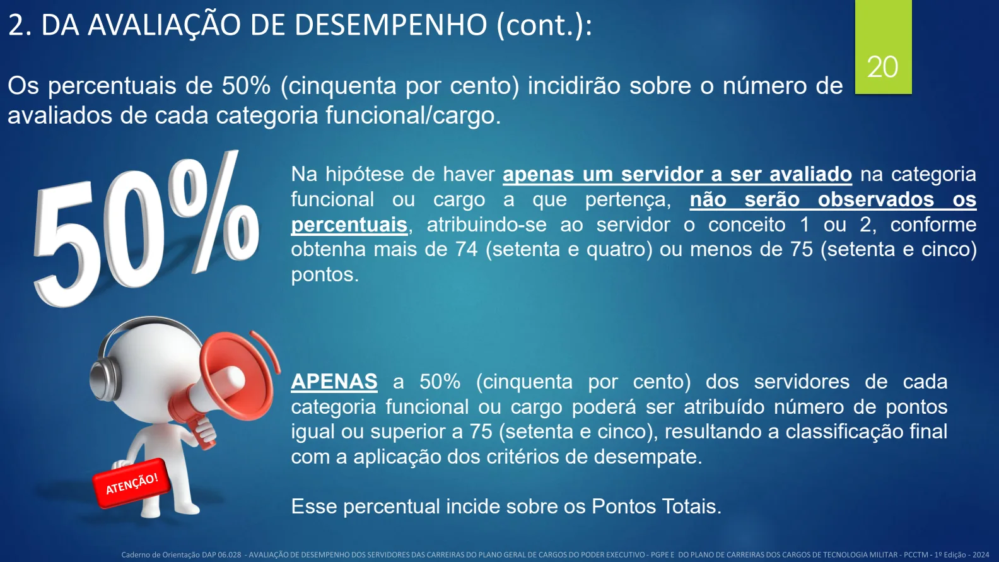
Avaliação de desempenho
PDF · p. 212. DA AVALIAÇÃO DE DESEMPENHO (cont.):
DESEMPATE NA AVALIAÇÃO DE DESEMPENHO PARA FINS DE PROGRESSÃO HORIZONTAL:
O desempate será feito pela soma dos pontos obtidos nos itens 1 a
8 (pontos parciais) da Ficha de Avaliação de Desempenho (FAD).
Ainda persistindo o EMPATE na avaliação de desempenho para
fins de progressão HORIZONTAL, terá preferência,
sucessivamente, o servidor:
a) de MAIOR TEMPO de referência.
Ver página original — tabelas, imagens e diagramas
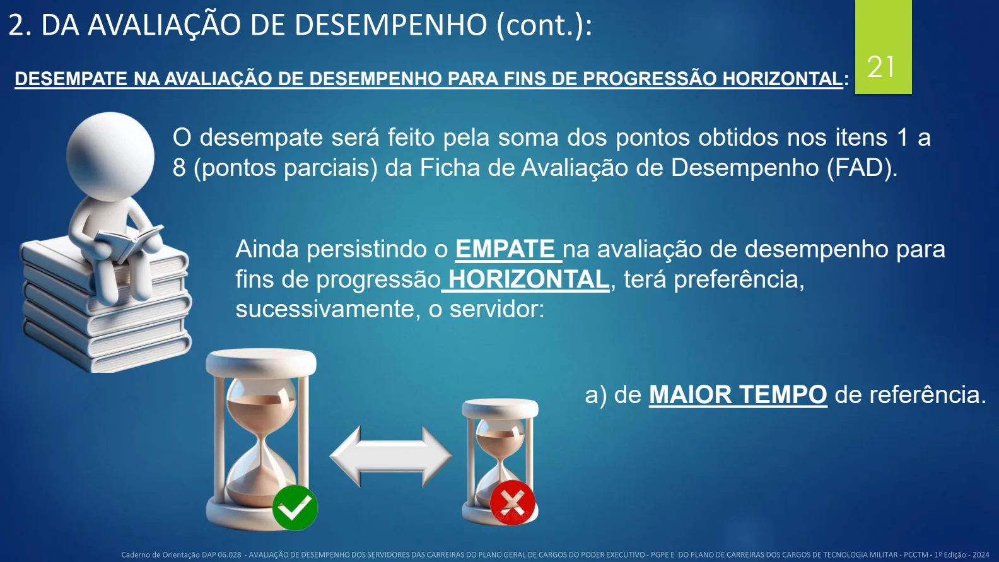
Avaliação de desempenho
PDF · p. 222. DA AVALIAÇÃO DE DESEMPENHO (cont.):
DESEMPATE NA AVALIAÇÃO DE DESEMPENHO PARA FINS DE PROGRESSÃO HORIZONTAL
(cont.):
a) de maior TEMPO na classe.
b) de maior TEMPO na categoria funcional ou cargo.
c) de maior TEMPO de serviço público FEDERAL.
Ainda persistindo o EMPATE na avaliação de desempenho para fins de progressão HORIZONTAL, terá preferência,
sucessivamente, o servidor:
Ver página original — tabelas, imagens e diagramas
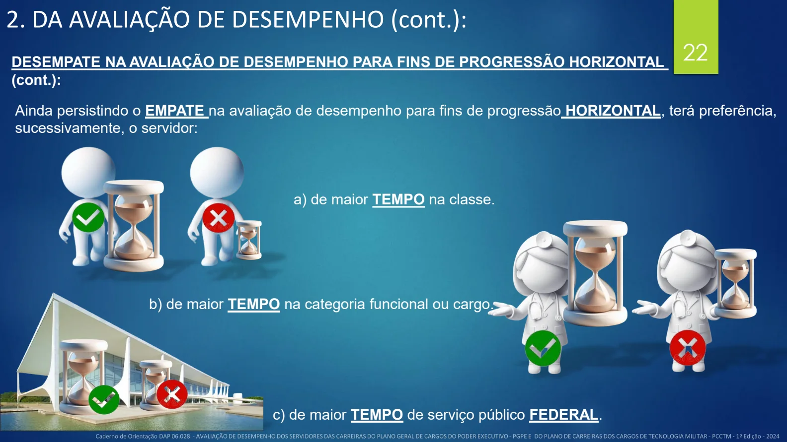
Avaliação de desempenho
PDF · p. 232. DA AVALIAÇÃO DE DESEMPENHO (cont.):
DESEMPATE NA AVALIAÇÃO DE DESEMPENHO PARA FINS DE
PROGRESSÃO HORIZONTAL
(cont.):
d) de maior TEMPO de serviço público.
e) MAIS idoso.
Ainda persistindo o EMPATE na avaliação de desempenho para fins de progressão
HORIZONTAL, terá preferência, sucessivamente, o servidor:
Ver página original — tabelas, imagens e diagramas
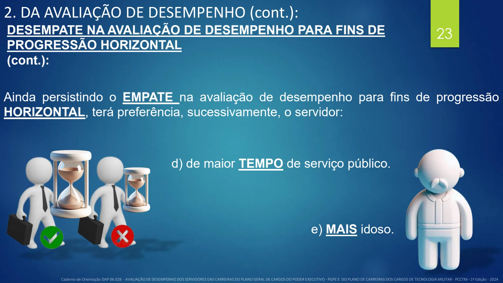
Progressão funcional
PDF · p. 243. DA PROGRESSÃO FUNCIONAL:
A progressão funcional, observado o cumprimento dos
correspondentes interstícios, vigora a partir de SETEMBRO E MARÇO.
Será declarado NULO o ato que houver concedido
indevidamente a progressão funcional.
Será efetivada a progressão funcional a que fazia jus
o servidor FALECIDO OU APOSENTADO.
A progressão funcional ocorrerá mediante ato do
Diretor de Assistência ao Pessoal (DAP).
Ver página original — tabelas, imagens e diagramas
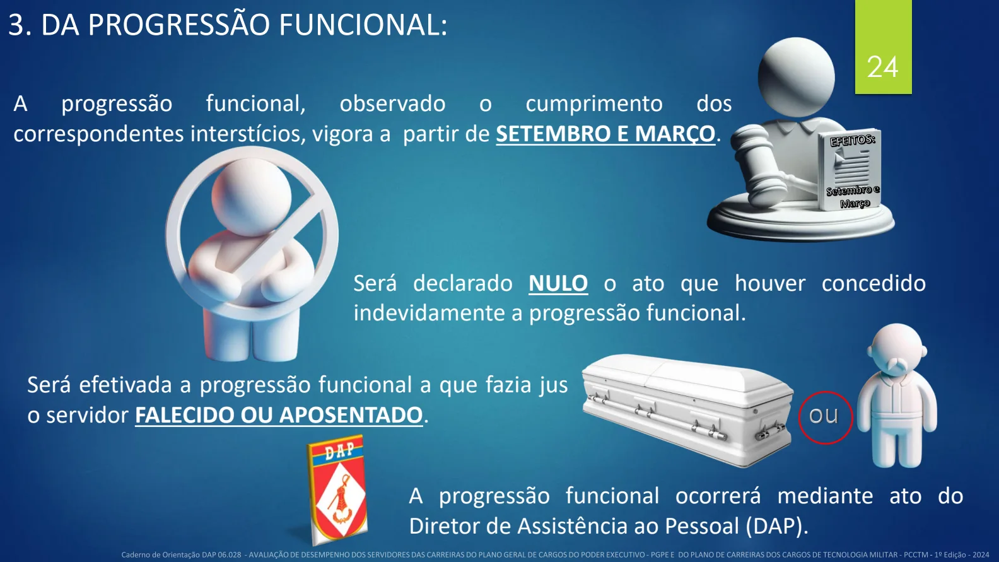
Documentos necessários
PDF · p. 25Esta página contém conteúdo gráfico. Consulte a reprodução original abaixo.
Ver página original — tabelas, imagens e diagramas
Documentos necessários
PDF · p. 26DOCUMENTO RESPONSÁVEL PELO
FORNECIMENTO OBSERVAÇÕES
Instruções sobre avaliação de desempenho DAP Anexo A
Ficha de Avaliação de Desempenho - FAD OM Anexo B
Boletim de Avaliação de Desempenho - BAD OM Anexo C
Capeador OM Anexo D
Relação nominal atualizada DAP -
Relação de códigos com discriminação dos motivos
de não avaliação DAP Anexo E
1. DOCUMENTOS NECESSÁRIOS:
Ver página original — tabelas, imagens e diagramas
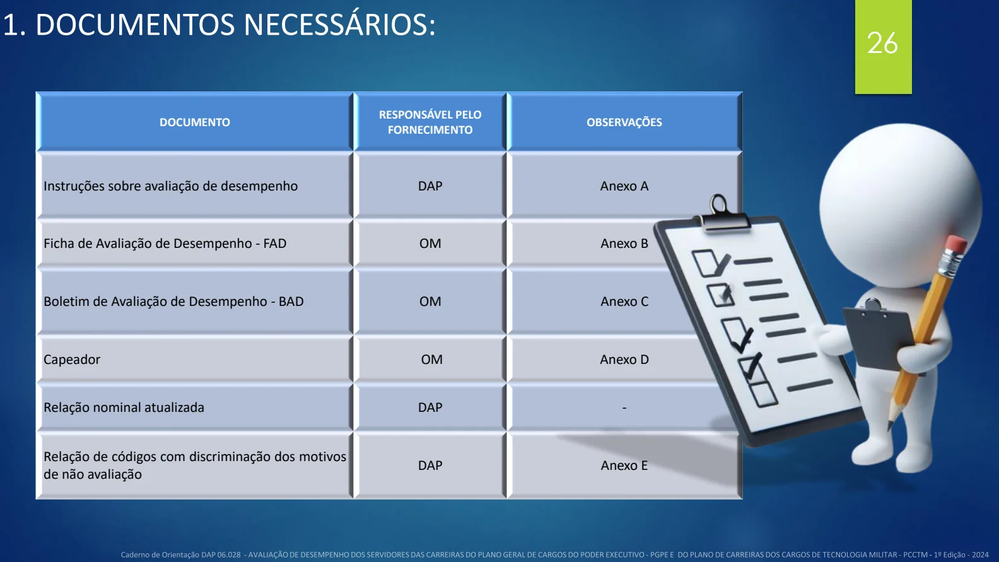
Esta página contém conteúdo gráfico. Consulte a reprodução original abaixo.
Ver página original — tabelas, imagens e diagramas
1. Encaminhar às OM, via RM:
a) Instruções para a Avaliação de desempenho;
b) FAD;
c) BAD;
d) Capeador; e
e) Relação nominal
Distribuir para as OM o material encaminhado
pela DAP
1. Avaliar os servidores de acordo com a
legislação e critérios dispostos neste caderno.
2. Restituir à RM todo o material referente à
avaliação, dentro do prazo estabelecido, exceto a
FAD, que deve ser arquivada na Pasta de
Assentamentos funcionais do servidor
DAP
RM
OM
Ver página original — tabelas, imagens e diagramas
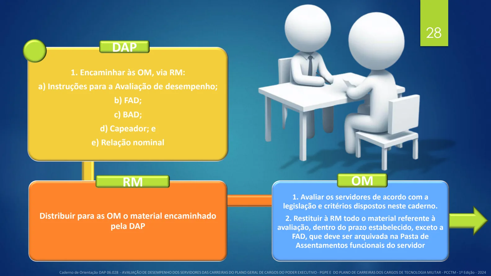
1. Consolidar a avaliação das OM
vinculadas e enviar todos os documentos
à DAP
1. Receber, conferir, implantar e processar a
avaliação de desempenho.
2. Divulgar, via RM, o Quadro com a avaliação
de corte para o Conceito 1, em cada cargo.
3. Expedir os atos de progressão funcional.
4. Publicar a portaria da progressão funcional
no Aditamento Técnico ao BOL/DGP
RM
DAP
1. Atualizar, no SIAPE/folha de
pagamentos, a progressão funcional.
2. Realizar upload da portaria de
progressão funcional no Assentamento
Funcional Digital de cada servidor.
OM
Ver página original — tabelas, imagens e diagramas
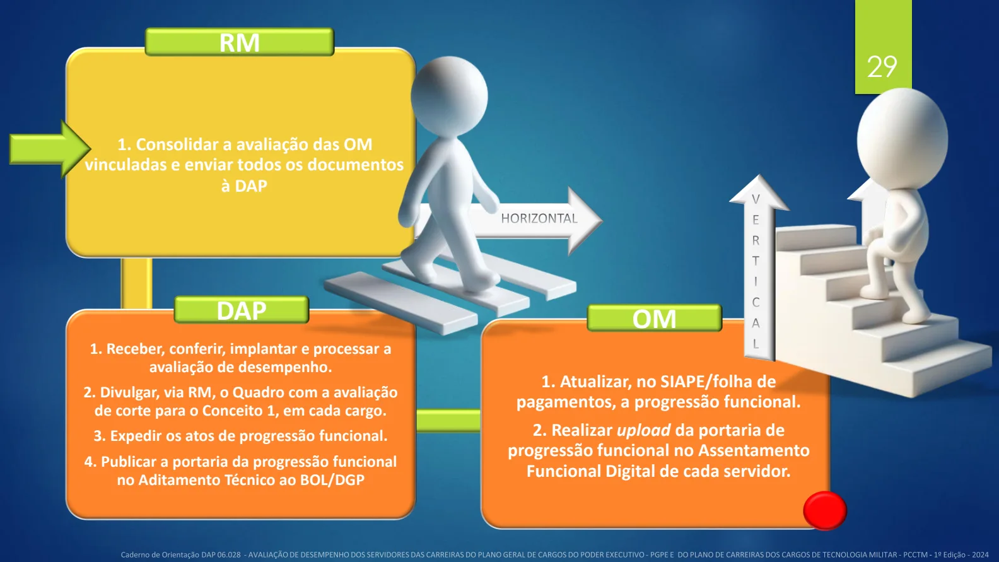
Fontes e elaboração
PDF · p. 30ELABORAÇÃO:
ASSESSORIA TÉCNICA DA SPC/DAP
SUBSEÇÃO DE CARREIRA DA SPC/DAP
JUNHO DE 2024
Para conhecer melhor o assunto, leia as
legislações indicadas no início deste caderno, disponíveis no link:
https://legis.sigepe.gov.br/legis/pesquisa-avancada
Ver página original — tabelas, imagens e diagramas
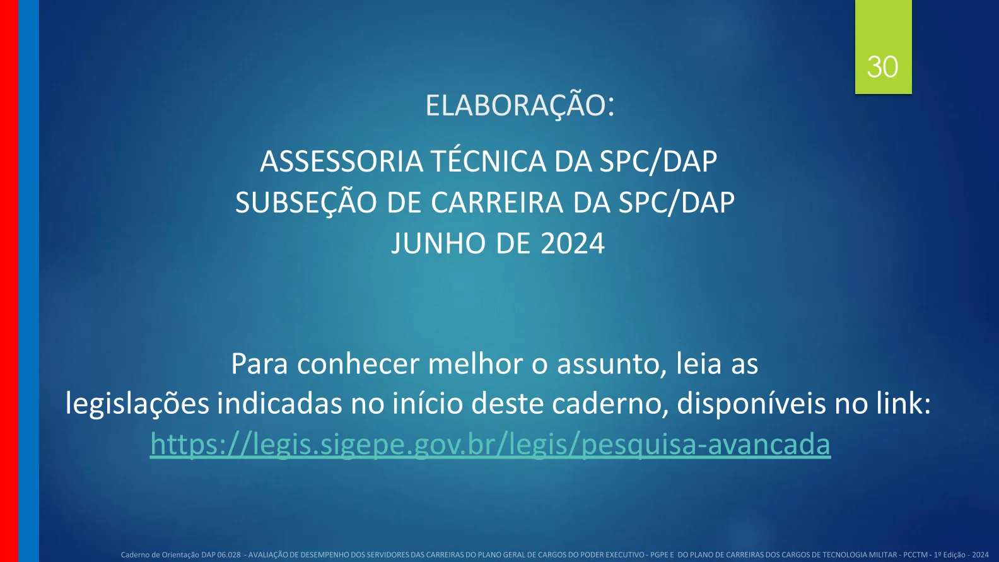
Anexos — instruções, FAD e BAD
PDF · p. 31ANEXOS
ANEXO A
INTRUÇÕES SOBRE AVALIAÇÃO DE DESEMPENHO DOS SERVIDORES DO PGPE E PCCTM
ITEM DESCRIÇÃO
1
Listagem por OM
Contém o nome dos servidores, por categoria funcional, lotados na OM.
Falhas, erros ou desatualizações devem ser apontados e, se for o caso, justificados na própria
listagem, que também deverá ser devolvida à DAP/Seção de Pessoal Civil.
2 Lista de códigos com discriminação dos motivos de não avaliação
Contém os códigos referentes às ocorrências que justificam a não avaliação do servidor.
3 Ficha de Avaliação de Desempenho (FAD)
Deverá ser preenchida para cada servidor
4
Ficha de Avaliação de Desempenho (FAD)
Deverá ser preenchida para cada servidor avaliável, por ele assinada e arquivada em sua pasta
de assentamentos.
Somente 50% dos servidores avaliáveis (ou 50% + 1, no caso de número ímpar), por categoria
funcional, poderão ser avaliados com total de pontos superior a 074.
5
Boletim de Avaliação de Desempenho (BAD)
Boletim no qual a OM deverá relacionar os servidores avaliados, por categoria funcional, em
ordem decrescente de pontos.
Não deverá conter rasuras.
6
Capeador
Para acompanhar os lotes de BAD de cada categoria funcional e registrar os dados quantitativos.
Os servidores aposentados, falecidos ou exonerados, até 30 JUN (ano da avaliação), não deverão
ser considerados nos quantitativos, mesmo que constem da Listagem por OM.
7
Servidores não avaliáveis
Todos aqueles que estejam incluídos numa das ocorrências relacionadas na “Lista de Códigos
com Discriminação dos Motivos de Não Avaliação”.
Já estão identificados na listagem por OM os não avaliáveis pelos seguintes motivos:
- posicionados em A-V, B-VI, e C-VI de qualquer categoria funcional (código 10);
- isentos de avaliação, de acordo com o Parecer nº 480/83-DASP (código 40).
Os afastamentos que interrompem o interstício (códigos 02, 21, 22, 23, 24 e 36) prevalecem
sobre os demais.
Portanto, as OM devem anotar o código referente à interrupção no campo adequado (Código
de Não Avaliação - CNA) da própria listagem, ainda que o mesmo já esteja preenchido com o
código 03, 10 ou 40, prevalecendo, portanto, o código referente ao afastamento.
8
Servidores isentos de avaliação – código 40
São isentos de avaliação os servidores:
- posicionados no penúltimo padrão de qualquer classe (A-IV, B-V, C-V ou S-II) e já previstos para
obterem uma progressão para final de classe, em decorrência de uma avaliação anterior;
- posicionados no antepenúltimo padrão de qualquer classe (A-III, B-IV, C-IV ou S-I) e já previstos
para obterem duas progressões para o penúltimo e último padrões da classe, em decorrência
de duas avaliações anteriores.
9
Servidor removido de uma para outra OM
Se avaliável, deve ser avaliado na OM que permaneceu lotado por mais tempo no período de
avaliação (1º JUL a 30 JUN).
A remoção deverá ser informada na listagem, ainda que o servidor não conste na mesma, caso
em que deve ser incluído, pelas OM de origem e de destino.
OBS: os códigos aqui utilizados são somente para esse fim.
Ver página original — tabelas, imagens e diagramas
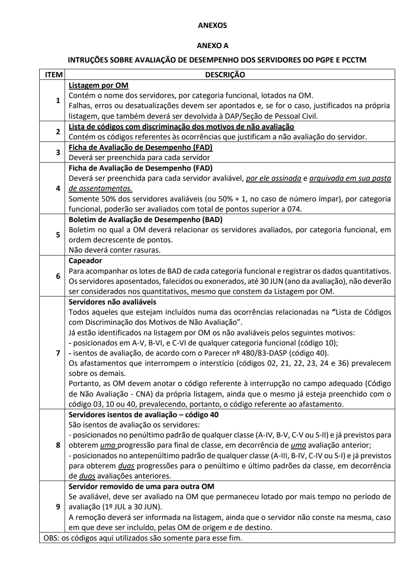
Anexos — instruções, FAD e BAD
PDF · p. 32ANEXO B
Ficha de Avaliação de Desempenho - FAD
FICHA DE AVALIAÇÃO DE DESEMPENHO - FAD
Nome do(a) servidor(a):
Categoria Funcional/cargo: Matrícula SIAPE:
Nível: Classe: Padrão:
Órgão de exercício (OM):
Período de avaliação: De 1º JUL _________ a 30 JUN _________
1. QUALIDADE DE TRABALHO
CAPACIDADE DE DESEMPENHAR AS TAREFAS COM CUIDADO, EXATIDÃO E PRECISÃO.
03 PONTOS 05 PONTOS 10 PONTOS 15 PONTOS 20 PONTOS
2. QUANTIDADE DE TRABALHO
VOLUME DE TRABALHO PRODUZIDO, LEVANDO EM CONTA A COMPLEXIDADE, A CAPACIDADE DE APRENDIZAGEM E O TEMPO
DE EXECUÇÃO, SEM PREJUÍZO DA QUALIDADE.
02 PONTOS 05 PONTOS 10 PONTOS 15 PONTOS 20 PONTOS
3. INICIATIVA
CAPACIDADE DE VISUALIZAR SITUAÇÕES E AGIR PRONTAMENTE, ASSIM COMO A DE APRESENTAR
SUGESTÕES OU IDÉIAS TENDENTES AO APERFEIÇOAMENTO DO SERVIÇO.
03 PONTOS 05 PONTOS 08 PONTOS 10 PONTOS
4. COOPERAÇÃO
CONTRIBUIÇÃO ESPONTÂNEA AO TRABALHO DE EQUIPE PARA ATINGIR O OBJETIVO.
02 PONTOS 05 PONTOS 07 PONTOS 10 PONTOS
5. ASSIDUIDADE - PRESENÇA PERMANENTE NO LOCAL DE TRABALHO.
03 PONTOS 05 PONTOS 08 PONTOS
6. PONTUALIDADE - CUMPRIMENTO DO HORÁRIO ESTABELECIDO.
02 PONTOS 05 PONTOS 07 PONTOS
7. URBANIDADE - RELACIONAMENTO COM OS COLEGAS E AS PARTES.
03 PONTOS 05 PONTOS 08 PONTOS
8. DISCIPLINA
OBSERVÂNCIA DA HIERARQUIA E RESPEITO ÀS NORMAS LEGAIS E REGULAMENTARES.
02 PONTOS 05 PONTOS 07 PONTOS
9. ANTIGUIDADE
TEMPO DE SERVIÇO PÚBLICO: 01 (UM) PONTO PARA CADA ANO DE EFETIVO EXERCÍCIO, ATÉ 30 (TRINTA) PONTOS.
(Computado até 30 JUN do ano da avaliação)
ATÉ 30 PONTOS
10. SOMATÓRIO DOS PONTOS ATRIBUÍDOS AO SERVIDOR
Somatório dos itens de 1 a 9.
TOTAL DE PONTOS
Em _______/_________/_______ ____________________________________
AVALIADOR
CIENTE EM __________/____________/___________ ______________________________________________
SERVIDOR(A) AVALIADO(A)
Ver página original — tabelas, imagens e diagramas
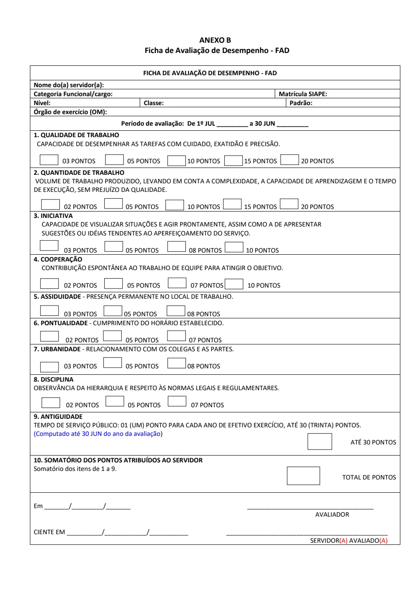
Anexos — instruções, FAD e BAD
PDF · p. 33ANEXO C
Boletim de Avaliação de Desempenho - BAD
MINISTÉRIO DA DEFESA
EXÉRCITO BRASILEIRO
(escalões hierárquicos até a OM expedidora)
(Denominação histórica)
BOLETIM DE AVALIAÇÃO DE DESEMPENHO – BAD
A CARGO DA DAP/SPC
PÁGINA RPP
NR DE
CÓDIGO DA OM
SIGLA DA OM:
CÓDIGO CATEGORIA
FUNCIONAL/CARGO
SEQ MAT SIAPE NOME
PONTOS
PARCIAIS
Σ 1 A 8 FAD
PONTOS
TOTAIS
Σ 1 A 9 FAD
1.
2.
3.
4.
5.
6.
7.
8.
9.
10.
___________/___________/ __________ ________________________________________
CMT, CH, DIR DA OM
Ver página original — tabelas, imagens e diagramas
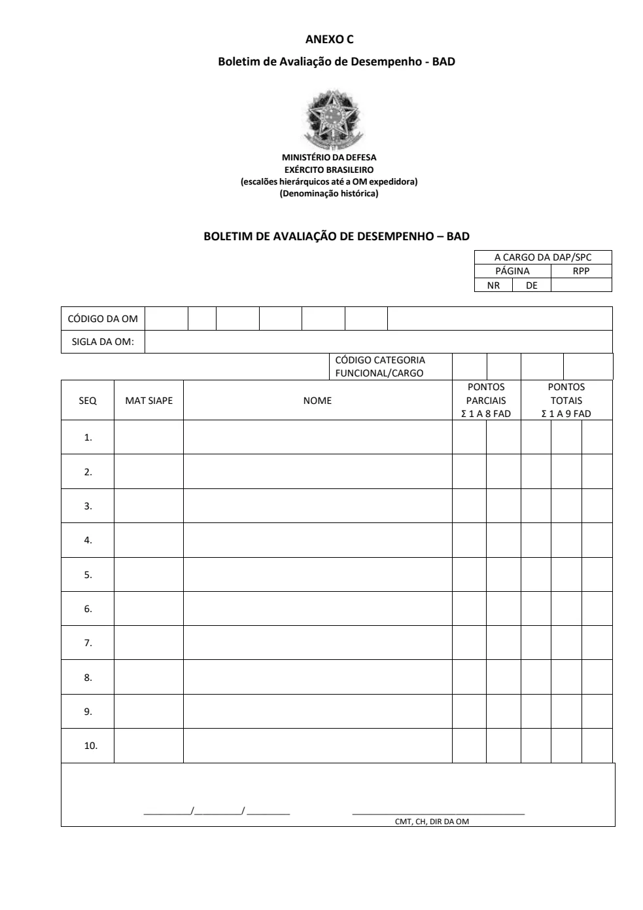
Anexos — instruções, FAD e BAD
PDF · p. 34ANEXO D
Capeador
MINISTÉRIO DA DEFESA
EXÉRCITO BRASILEIRO
(escalões hierárquicos até a OM expedidora)
(Denominação histórica)
CAPEADOR
1- PREENCHIDO (OM) 2- CONFERIDO (SRPC)
EM: EM:
POR: POR:
3- CATEGORIA FUNCIONAL/CARGO (denominação ou código):
4- SERVIDORES NÃO AVALIÁVEIS (ocorrências no período de avaliação)
a) Ingresso no cargo após 1º de julho do ano anterior ao da avaliação
b) Interrupção interstício (art. 8º do Decreto nº 84.669, de 1980)
c) Concorrentes à progressão vertical
d) Conceito 2 (afastamento remunerado 180 dias)
e) Conceito 1 ( CCE, FCE, à disposição da Presidência da República)
f) Conceito 2 (mandato eletivo ou classista)
g) Isentos de avaliação (Parecer nº 480, de 1983/DASP)
TOTAL DE SERVIDORES NÃO AVALIÁVEIS
5- RESUMO
a) Total de servidores no cargo¹ (A) – não considerar os servidores posicionados em S III
b) Total de servidores não avaliáveis (B)
c) Total de servidores avaliáveis (A-B)
6- NÚMERO DE SERVIDORES AVALIADOS
a) Igual ou superior a 75 (setenta e cinco) pontos totais (50%)
b) Inferior a 75 (setenta e cinco) pontos totais (50%)
Obs: percentual incide sobre os pontos totais.
INSTRUÇÕES PARA O PREENCHIMENTO:
a) Datado e assinado pelo encarregado de pessoal civil da OM;
b) Datado e assinado pelo (a) chefe da DRPC;
c) Preencher com denominação ou código da categoria funcional/cargo. Exemplo: 0701, 0801, 1006,
443/001, etc;
d) Indicar as ocorrências com dados numéricos, orientando -se pelas instruções sobre o sistema de
progressão funcional; e
e) Preencher com o somatório dos dados numéricos indicados.
Ver página original — tabelas, imagens e diagramas
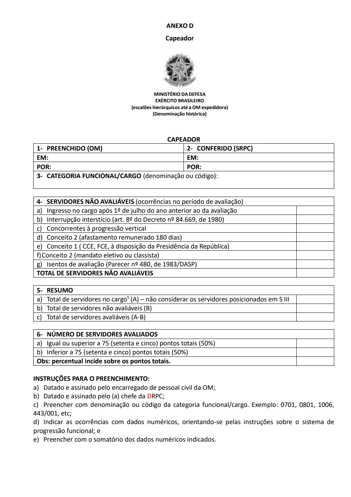
Anexos — instruções, FAD e BAD
PDF · p. 35ANEXO E
Relação de códigos com discriminação dos motivos de não avaliação
MINISTÉRIO DA DEFESA
EXÉRCITO BRASILEIRO
(escalões hierárquicos até a OM expedidora)
(Denominação histórica)
RELAÇÃO DE CÓDIGOS COM DISCRIMINAÇÃO DOS MOTIVOS DE NÃO AVALIAÇÃO
CÓDIGO DISCRIMINAÇÃO
01 Cessão para CCE no Poder Legislativo ou Judiciário da União e DF.
02 Prisão.
03 Ingresso no Cargo após o início do período de avaliação.
04 Ocupante de CCE e FCE.
05 Afastamento para Cargo ou Função Comissionados em Empresas Públicas, Sociedade de
Economia Mista, Fundações instituídas pela União e nos serviços dos Estados e Municípios.
06 Remoção para esta OM, depois de decorridos (seis) meses do período de avaliação (após
31 DEZ), caso em que o servidor será avaliado pela OM de origem).
07 Mandato Eletivo ou Classista.
08 Remoção desta OM, depois de decorridos 6 (seis) meses do período de avaliação (após 31
DEZ), caso em que o servidor será avaliado pela OM atual.
09 Servidor localizado no último padrão da classe final.
10 Servidor localizado no último padrão das classes inicial ou intermediária (Progressão
Vertical).
11
Afastado durante o período de avaliação por tempo igual ou superior a 6 (seis) meses, por
ocorrências remuneradas não relacionadas no art. 8º, do Decreto nº 84.669/80 (LTS, LPA,
etc).
21 Licença com perda de vencimento (LTIP, LMAC, LISR, etc).
22 Suspensão disciplinar
23 Viagem ao exterior, sem ônus para a Administração.
24 Prestação de serviço a Organização Internacional.
26 Em exercício na Presidência da República e respectivos órgãos.
36 Licença para Tratamento de Interesse Particular.
38 Afastado por designação como membro de Colegiado Federal.
39 Evasão – aposentadoria, falecimento, exoneração, etc (indicar com a data).
40 Isentos de avaliação (Parecer DASP nº 480/83).
OBS 1 Deverão ser registradas todas as ocorrências que o servidor tiver dentro do período de
avaliação, inclusive as reincidências.
OBS 2
Os afastamentos que interr ompem o interstício (códigos 02, 21, 22, 23, 24 e 36)
prevalecem sobre os demais.
Portanto, a OM deve anotar o código referente a interrupção no campo adequado (código
não avaliação), ainda que o mesmo esteja preenchido com o código 03, 10 ou 40,
prevalecendo, portanto, o código referente ao afastamento.
OBS 3 Os códigos aqui utilizados são somente para esse fim.
Ver página original — tabelas, imagens e diagramas
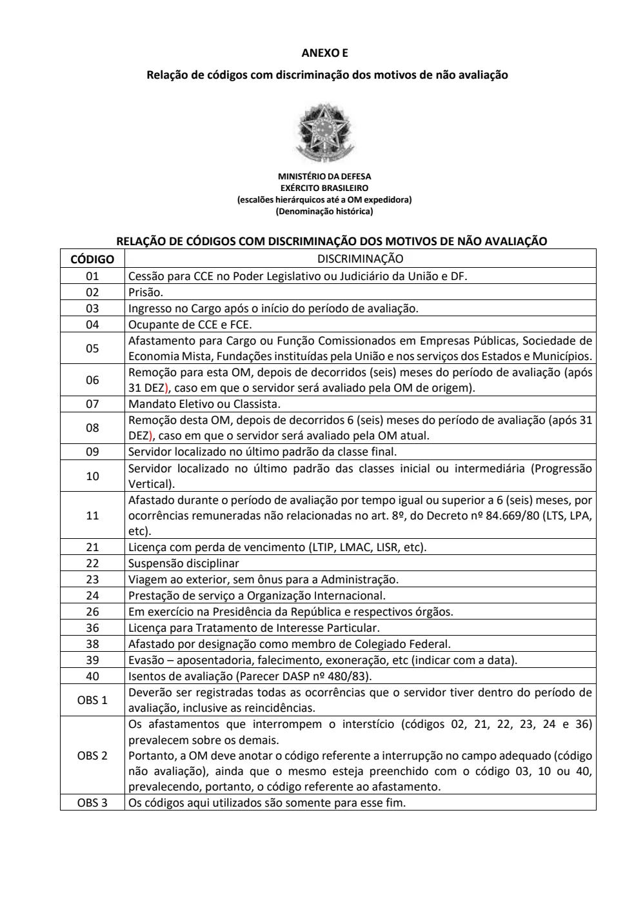